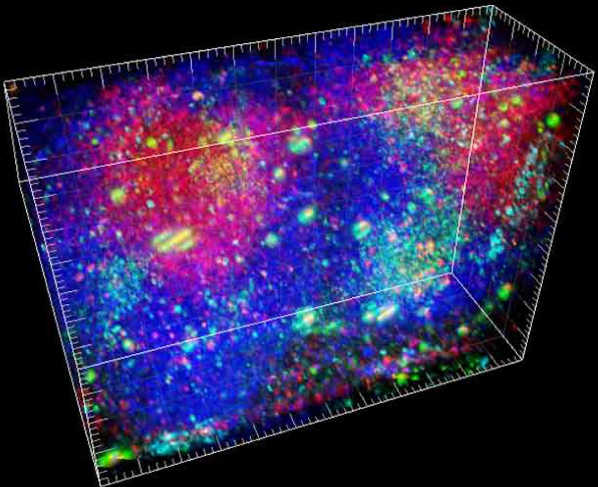

Computational Immunology
What it is: Applying machine learning and algorithms to large-scale genomic datasets to model and predict immune system behavior.
What they do: Analyze immune cell sequencing data (T-cell/B-cell repertoires), build models to predict vaccine effectiveness, simulate immune responses to pathogens and cancer, develop software tools for immunologists, and predict antibody-antigen binding using ML.
CS Skills Used: Python, R/Bioconductor, machine learning for biological sequences, algorithms for sequence alignment and optimization, database management, data visualization, and high-performance computing for genomic data processing.
Background: CS/bioinformatics degree plus immunology fundamentals. Strong computational skills matter more than deep biology knowledge initially. Often requires grad school.
Learn More: ImmuneSpace - Computational Immunology Platform